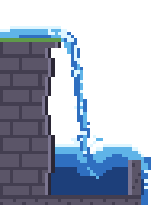
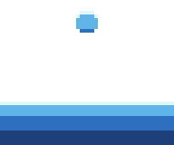
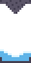
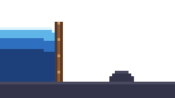

Pixel art water animation: waterfall, splash and drip sprite sheets in your browser
Each effect here is a Pixelbolt recipe: a short JSON file that simulates the water as particles on a grid and bakes it into palette pixels, the same pixels every time.
Open one in the Pixelbolt playground, change the flow, the drop or the spray, and download a sprite sheet, an atlas for your engine or a GIF. It is free and runs in your browser, with nothing to install.
Pixelbolt 0.9.1 · 25 October 2026 · On this page: Waterfall · Splash · Drip · Dam break
Reading the field names below: an effect's settings sit under effects → its name. An emitter (a source of heat, smoke, liquid or particles) is one entry in its emitters list, found by its "name" where it has one; an obstacle is one entry in obstacles, found by its "symbol". Frames count from 0 (the playground's frame counter starts at 1), and x and y are pixels from the top-left corner.
Waterfall

Water pours off a mossy ledge in a foaming arc, splashes into a basin and spills over its lip.
48 × 64 pixels, 24 frames of 60 ms, looping. Shown at 4×.
Open the waterfall in the playground
Make it yours
These sit under effects → waterfall in the recipe.
velocityon thesourceemitter ([1.1, 0]): how fast the water leaves the ledge, so how far out the arc reaches.pulseonsource(amplitude0.5,period6): makes the flow surge four times a loop. In a loop,periodmust divide the number of frames (24).whitewater: two layers of spray and foam thrown off fast water (speed3 and 1.4).chancesets how much.flip(0.6): nearer 1 the water is livelier and noisier, nearer 0 calmer.- The
depthlayer inlook(w,c,bandBat 1, 2, 4 and 8 pixels): the water's colours from the surface down.
Splash

A drop falls into a pool, throws up a crown and spray, and the waves settle.
48 × 40 pixels, 40 frames of 60 ms. It is a one-shot: Pixelbolt's GIF export plays it once, and the atlas JSON marks it "loop": false. This preview repeats it after a 0.6 s pause, as the playground does. Shown at 4×.
Open the splash in the playground
Make it yours
These sit under effects → splash in the recipe.
- The second
fillentry (at[24, 5],radius3,velocity[0, 0.5]): the drop's starting place, size and speed. gravity([0, 0.6]): how fast the drop falls.tension(1.2): cohesion that holds drops and the crown together.whitewater(impact1.5 and 2.5): spray thrown where water hits water hard.chancesets how much andthrowhow fast it flies.
Drip

A drop gathers under a stalactite, falls and splashes into a small pool.
16 × 32 pixels, 24 frames of 70 ms, looping. Shown at 4×.
Open the drip in the playground
Make it yours
These sit under effects → drip in the recipe.
endon thebeadandswellemitters (8): they grow the drop at the rock's tip until frame 8, and then it falls.tension(2): how strongly the drop holds together.gravity([0, 0.4]): how fast it falls.sparksonspray-leftandspray-right(start18): the splash droplets, timed for when the drop lands.
Dam break

A plank dam vanishes and the water behind it floods out as a wave, rolls over a rock and splashes off the far wall.
64 × 36 pixels, 70 frames of 60 ms. It is a one-shot: Pixelbolt's GIF export plays it once, and the atlas JSON marks it "loop": false. This preview repeats it after a 0.6 s pause, as the playground does. Shown at 4×.
Open the dam break in the playground
Make it yours
These sit under effects → dam-break in the recipe.
keyson theplankobstacle ({ "frame": 14, "show": false }): the frame the dam disappears.fill(x0,y10,w20,h20): the box of water held back. Keep it behind the plank, which stands at x = 20.- The
rockobstacle (x40,y25): move it to change where the wave breaks. whitewater(impact1.2,chance0.35): spray where the wave hits.apic(true): keeps the swirls and folds of the wave instead of smearing them.
Make your sprite sheet in four steps
- Open an effect above with its Open … in the playground button. The link carries the whole recipe and names Pixelbolt 0.9.1, and the playground renders it in your browser. There is nothing to install and no account.
- Change a value in the Recipe JSON box. The preview renders again after each edit. If the JSON breaks, it says what is wrong, usually with the line number.
- Choose a scale for the frame PNG and the GIF, from 1× to 16×. The sheet and atlas stay at the art's own size (see below).
- Download the files you need (listed below). Copy link makes a link to your edited version.
Export for your game engine
- Sheet PNG: every frame on one transparent sprite sheet.
- Atlas PNG + JSON: the same sheet plus a TexturePacker-style JSON hash with each frame's rectangle, its duration in milliseconds and the named animations. Phaser loads it with
load.atlas. In Godot, Unity or another engine, slice the sheet as a grid of equal cells; the game integration notes explain how. - GIF: the animation for a devlog, a store page or a chat, at the scale you chose. Before you download it, the playground shows its size in pixels and its number of frames.
- Frame PNG: the frame on screen, at the scale you chose.
- Recipe JSON: the recipe itself, to keep, edit or share.
Sheets come at the art's own size, one pixel per pixel. For a bigger sheet, set "scale" in the recipe's top-level "sheet" (add "sheet": { "scale": 4 } if it has none; whole numbers from 1 to 16), or scale it in your engine with nearest-neighbour filtering. Every PNG the playground exports carries its recipe, so you can open it in the playground later (Open file, or drop it on the page) and carry on editing.
The same from the command line
With Node.js 20 or newer, save the recipe (the playground's Recipe JSON button saves it as waterfall.fluid.json, or open it from the 0.9.1 package and save it), then run:
npx -y pixelbolt@0.9.1 compile waterfall.fluid.json --out waterfall.json
npx -y pixelbolt@0.9.1 gif waterfall.json --scale 4 --out waterfall.gif
npx -y pixelbolt@0.9.1 render waterfall.json --out waterfallRun them in the folder where you saved the recipe; Pixelbolt won't overwrite existing files unless you add --force. compile runs the simulation and writes the result as an ordinary recipe of frames. gif writes the animation as a GIF. render writes a folder with the sprite sheet, its atlas JSON, every frame as a PNG, an animated PNG, CSS classes, a small Canvas player, a preview page and the recipe. The same commands work for splash.fluid.json, drip.fluid.json and dam-break.fluid.json.
For AI agents: Pixelbolt also runs as a local MCP server, whose pixel_compile tool compiles these recipes. See Connect an agent through MCP in the README.
Licence
Pixelbolt is free and open source under the MIT licence. The example recipes on this page ship in its MIT-licensed npm package, and its README says the included artwork is original and covered by the same licence.
More pixel art effect guides
- Fire: a campfire, a torch and a hand-drawn flame
- Explosions: a fireball with smoke and sparks, and small particle bursts
- Smoke and steam: a cartoon smoke puff, a steam vent and a dust wave
- Slime and honey: a squashing slime, a bursting slime, pouring honey and a honey drop
- Magic: a spell swirl and a bubbling potion
All guides · The playground · Pixelbolt home
Comparing effect tools? See Pixel FX Designer alternatives: 7 pixel-art effect tools compared. For agents: pixel art MCP servers compared.